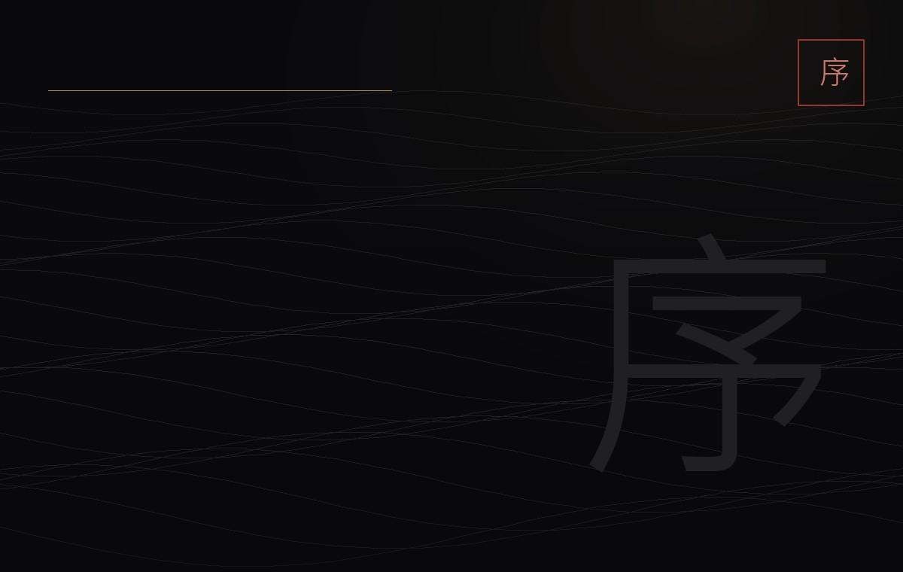
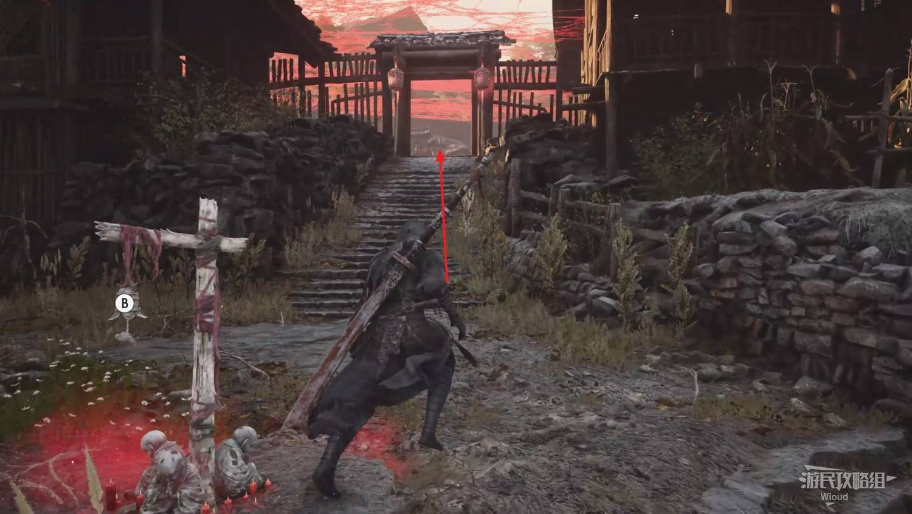
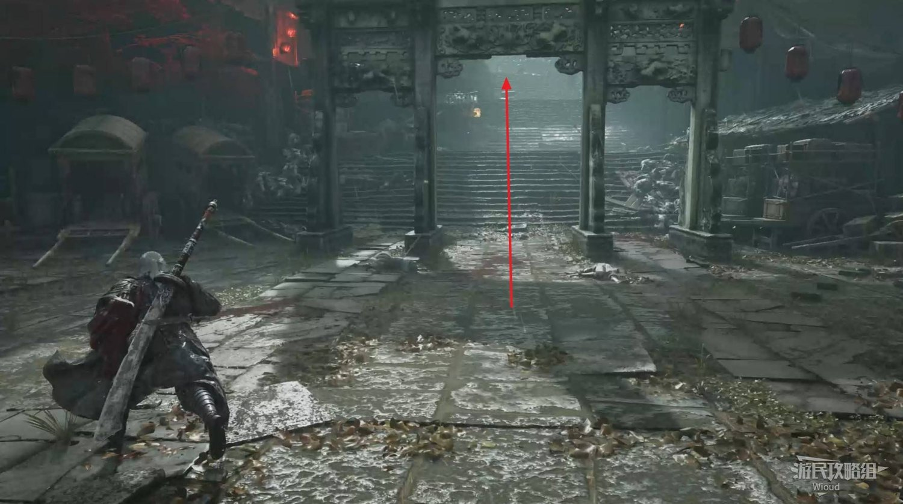
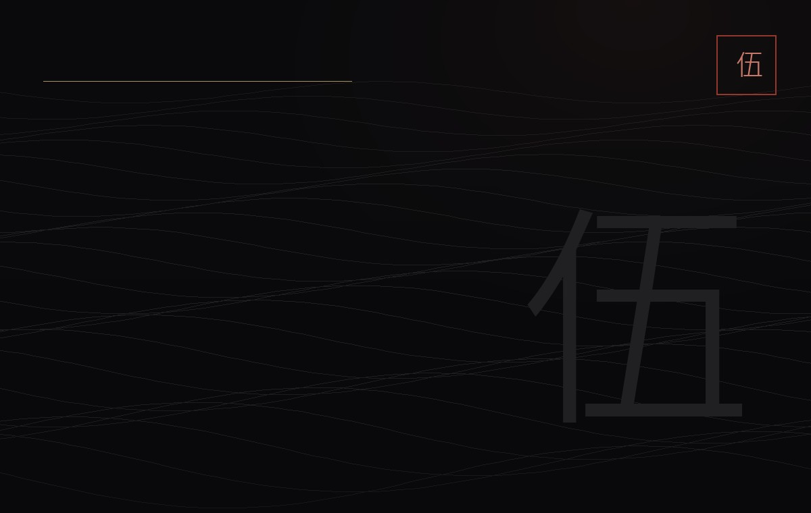
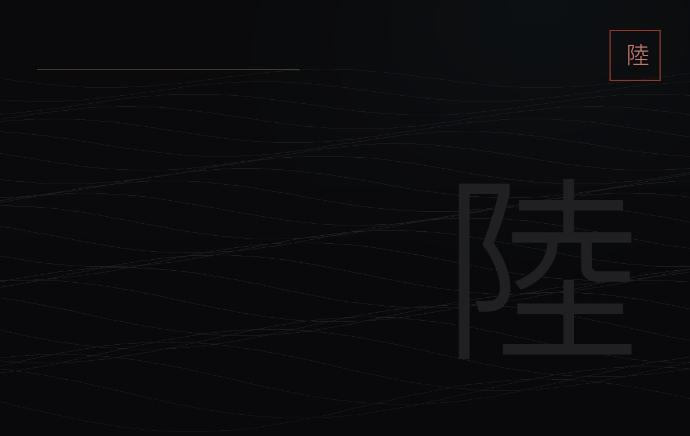
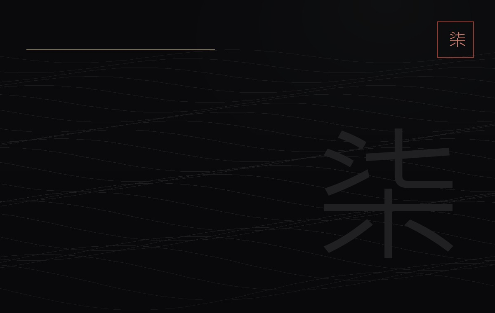
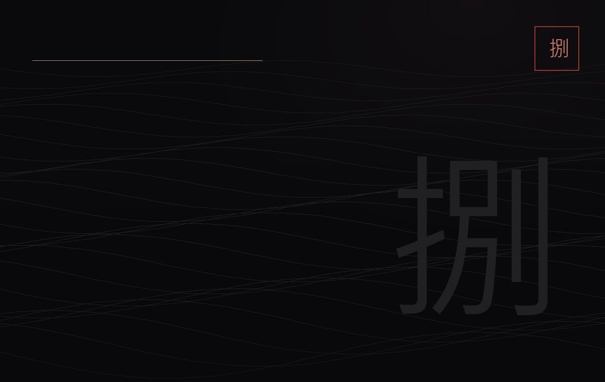
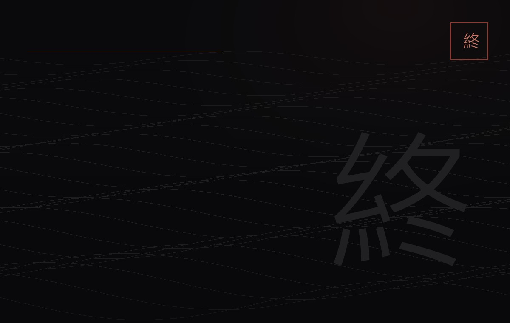

章節選擇章節
依主線順序排列。卡片上的「錯過不再」是本章會永久消失的條目數量，不是收集品總數。

章節 序物是人非
序章
先學會站著，再學會殺人。
0 錯過不再2 頭目3 節點
章節 壹逆流而上
悲泣溪谷
第一章真正開始的地方，也是錯過最多的地方。
11 錯過不再6 頭目17 節點

章節 貳林中血鏡中蛇
血色森林
六朵花，決定你打白赤練時是一個人還是兩個人。
7 錯過不再6 頭目13 節點

章節 參無心的殘餘
陸家村
五條緞帶、六朵螢火，還有一個不能先打的老根頭。
8 錯過不再7 頭目14 節點

章節 肆死亡之鎮
龐鎮
全遊戲最大的一張圖，也是真結局的分岔口。
8 錯過不再10 頭目20 節點

章節 伍崑崙支柱
正道大營
記憶之花藏在箭塔、墳場與一句不能殺的人身上。
4 錯過不再3 頭目6 節點

章節 陸殺氣驅動船
梅谷湖
湖面很大，但真正要緊的只有一條船與一把琵琶。
6 錯過不再7 頭目10 節點

章節 柒哭泣之源
枷籠山
霧散之後，山裡只剩兩種人：獄卒與囚徒。
2 錯過不再5 頭目7 節點

章節 捌前進之路
戲夢山莊
走進這道門之前，先把整個江湖的事了結。
3 錯過不再3 頭目5 節點

章節 終魂的價值
斷魂山
走到這裡，已經沒有回頭路；但結局還有兩種。
2 錯過不再4 頭目5 節點